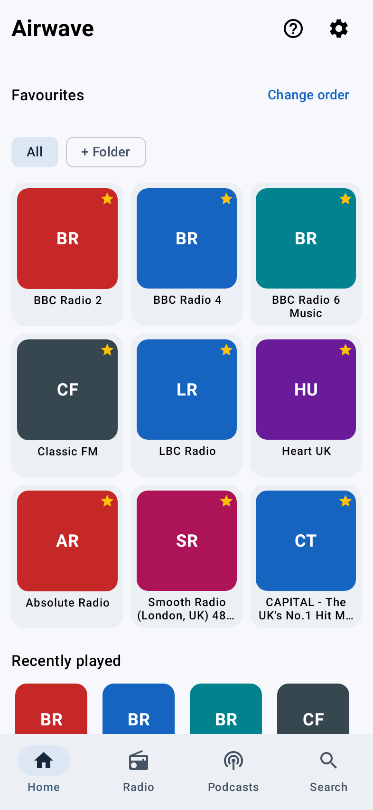
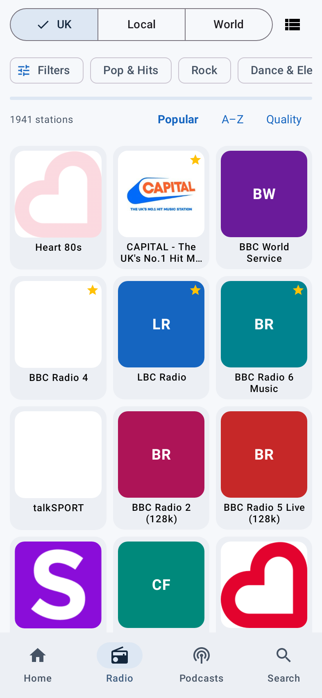
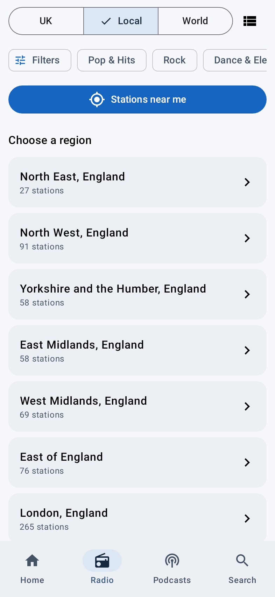
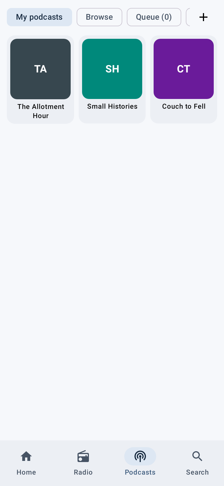
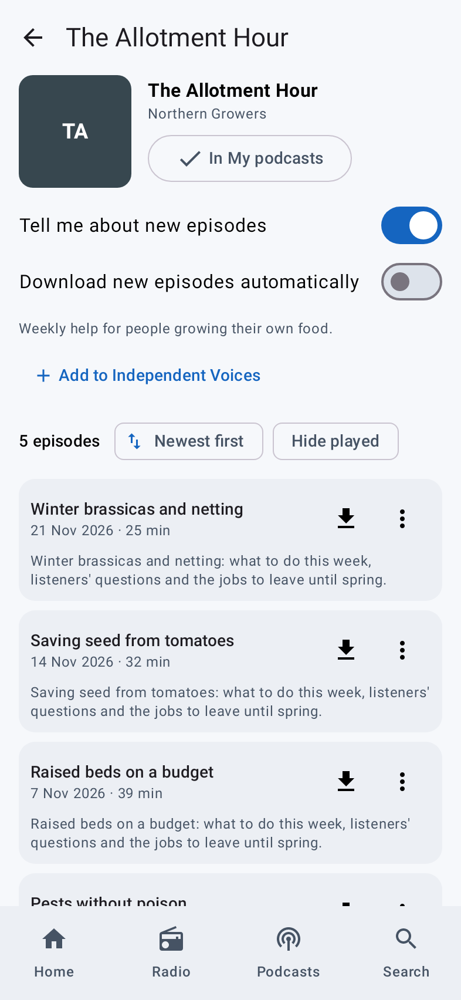
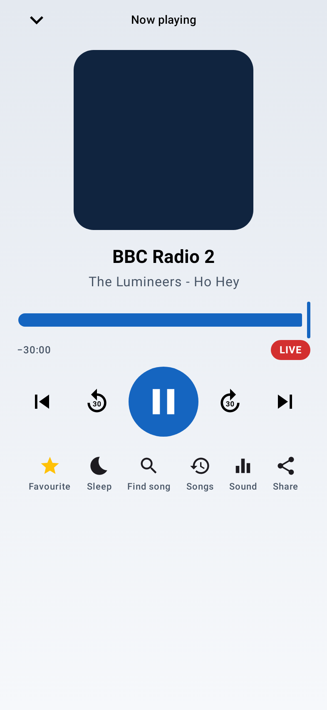
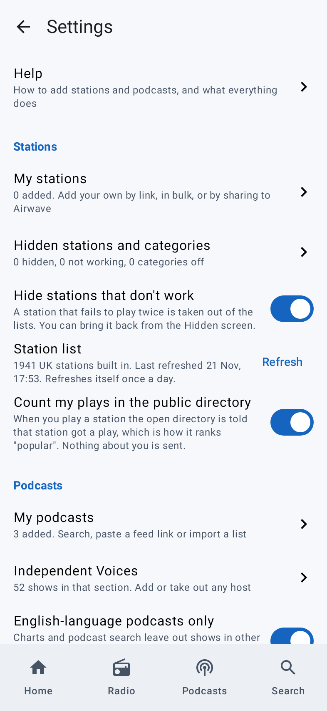
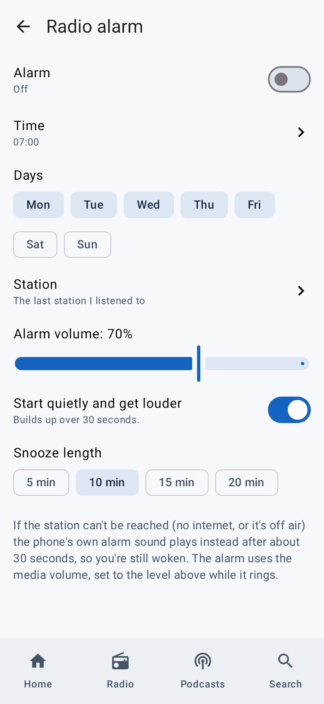

Every station, every podcast, no adverts
Airwave puts live radio and podcasts in one app. Over 1,900 UK stations are built in, sorted by region and town, with around 50,000 more from the rest of the world a search away.
Pause and rewind live radio, wake up to a station, listen in the car with Android Auto, and follow podcasts with downloads and a queue.
Download for AndroidHow to install
- Version 1.3
- Android 8 or later
- 10.5 MB
Free, with nothing to unlock. No adverts, no account with the developer, no tracking. Compare or read the release notes.
Chrome may say the file might be harmful. It shows this for app files that do not come from Google Play. Choose Download anyway.

- No subscriptionEvery feature is in the free app.
- No advertsNone in the app and none on this site.
- No accountNothing to sign up for.
- Easy on dataA data saver picks lighter streams on mobile data.
A look inside
These are the real screens, drawn from the app's own code. The podcasts in them are made up. Swipe or scroll sideways to see them all.







How it works
There is nothing to buy and no account to make. Stations come from the public Radio Browser directory, and podcasts from their own feeds.
Find a station
Browse the UK by category, region or town, search the worldwide directory, or tap Stations near me.
Make it yours
Star your favourites, sort them into folders, add stations by link and follow podcasts.
Listen anywhere
On the lock screen, in the car with Android Auto, on Bluetooth, with a sleep timer, or as your morning alarm.
Everything is in, and all of it is free
Nothing below is held back for a paid tier, because there is no paid tier.
Radio
- UK stations sorted by place
- Over 1,900 UK stations built in, with more than 1,000 placed in a region and town.
- The world too
- Around 50,000 more stations worldwide, by country, language and quality.
- Filters that combine
- Category, place, language and sound quality together, saved for next time.
- Pause and rewind
- Live radio keeps the last few minutes on your phone, so you can pause and go back.
Podcasts
- Podcasts done properly
- Follow, download, queue, speed control, and a sleep timer that stops at the end of the episode.
- Browse built in
- Tens of thousands of English-language podcasts by category, with charts for several countries.
- Your own feeds
- Search, paste a feed link, or bring your list from another app as an OPML file.
- More like this
- Similar shows on every podcast's page, and search inside its episodes.
Around you
- Android Auto
- Browse and play from the car. A page in the app shows how to switch it on.
- Radio alarm
- Wake up to a station, with the phone's own alarm as a backup.
- Lock screen and widget
- Controls where you need them, with the lock screen player off until you want it.
- Sound your way
- Equaliser, bass and volume levelling.
Looking after you
- Easy on mobile data
- A data saver and a count of what Airwave has used.
- A backup you control
- Save a file with your favourites, stations, podcasts and settings.
- Hide what you do not want
- Hide stations and whole categories, and dead stations drop out by themselves.
- Help built in
- How to add stations and podcasts, and where to find a stream link.
Your listening is your business
No servers
Airwave has no accounts and no servers of its own. The developer never sees what you listen to.
No ads, no tracking
There is no advertising, analytics or tracking, in the app or on this site.
Location only when you ask
Stations near me uses your rough location on the phone, only when you tap it.
Installing and updating
Airwave is not on Google Play, so your phone asks a couple of extra questions the first time.
Download the app file
Tap Download on your phone. The file is called Airwave.apk and is about 10.5 MB. If Chrome says the file might be harmful, choose Download anyway.
Allow the install
Open the file. The first time, Android asks you to allow your browser to install apps. Allow it, go back and tap Install. If Google Play Protect steps in, choose More details, then Install anyway.
Updating later
Airwave tells you when a newer version is out. Install the new file over the old one and everything you have saved is kept.
Version 1.3, released 21 November 2026. See the release notes, or check your download.
Questions
Is Airwave really free?
Yes. There is no paid version, no subscription and no adverts in the app, and nothing in it is locked away. Stations may still play their own adverts, as they do on any radio.
Is Airwave on Google Play?
No. Airwave is a personal project and is downloaded from this site as an Android app file. It needs Android 8 or later.
Why will a station not play?
A few stations only allow listening in their own app or their own country, and some change their stream address without telling anyone. Check your internet first, then try again in a minute. If a station fails twice, Airwave takes it out of your lists, and you can bring it back under Settings, Hidden stations and categories. If you know the station's new stream link, add it under Settings, My stations.
My station is not in the list. Can I add it?
Yes. First try Search, which looks through the whole worldwide directory and not only the built-in list. If it is not there, go to Settings, My stations, Add a station, paste the station's stream link, tap Check and play, then Save. You can also share a link to Airwave from your browser. The Help page in the app explains where to find a stream link.
How do I add a podcast?
On the Podcasts tab tap +. Type the podcast's name to search, paste its feed link, or import a list of subscriptions exported from another podcast app as an OPML file.
Why can I not pause and rewind some stations?
Pause and rewind works by keeping the last few minutes of the station on your phone. Some stations, including some BBC streams, send their sound in a format called HLS that cannot be kept this way. They still play, and the player tells you when rewind is not possible.
How much mobile data does radio use?
Roughly 30 MB an hour at 64k, 60 MB an hour at 128k and 140 MB an hour at 320k. Data saver in Settings picks a lower-quality version of a station on mobile data where one exists, and Settings shows how much data Airwave has used.
Does Airwave know where I am?
Only if you tap Stations near me, and Android asks your permission first. Your rough location is used on the phone to sort stations by distance. It is not stored and is not sent anywhere. You can pick a region by hand instead.
How do I get Airwave on Android Auto?
Android Auto hides apps that were not installed from Google Play until you allow them. On the phone open Android Auto's settings, scroll to the bottom, tap Version ten times to switch on developer settings, then open the menu, choose Developer settings and tick Unknown sources.
Will the alarm still wake me with no internet?
Yes. If the station cannot be reached when the alarm is due, the phone's own alarm sound plays instead after about 30 seconds. For the alarm to be reliable, do not force stop Airwave, and set its battery use to Unrestricted in the phone's settings.
How do I move to a new phone?
In Settings choose Save a backup file. It holds your favourites, folders, own stations, podcasts, saved filters, alarm and settings. Copy the file to the new phone, install Airwave and choose Restore from a file. Downloaded episodes are not in the backup.
How do I update Airwave?
Airwave looks at its download page about twice a day and shows a notice on the Home tab and in Settings when a newer version is there. Download it and install it over the one you have. Your favourites, stations and podcasts are kept.
Radio and podcasts, the way you like them
Free, with no adverts and nothing to unlock. Made by the developer of several other free Android apps: see them all.